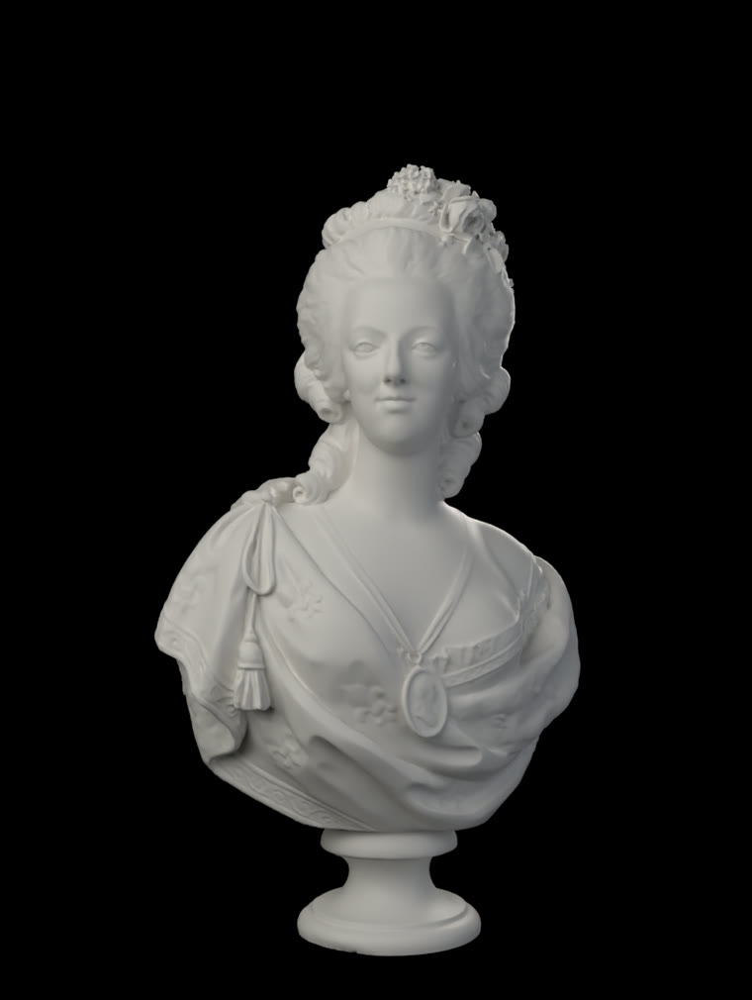
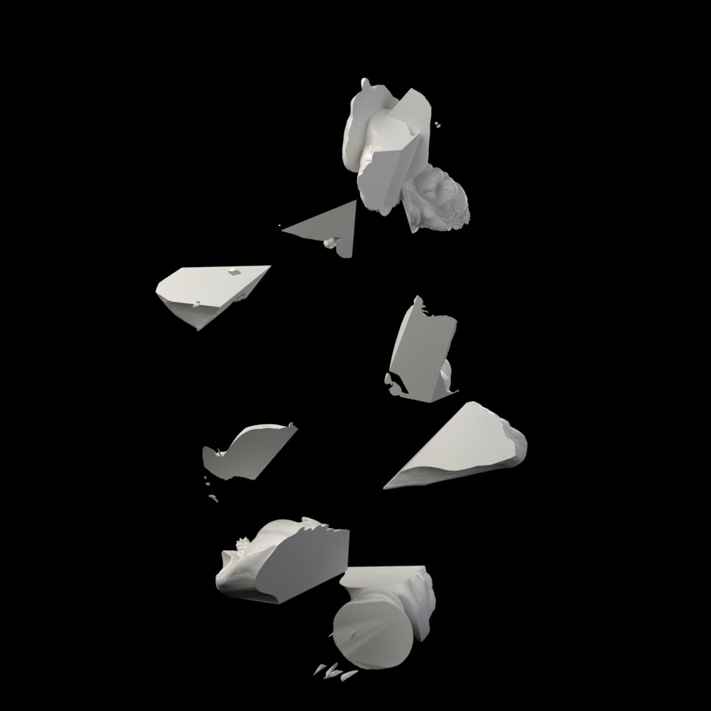

Abby’s Museum · milestone 3


The good pieces are there. The curls at the top, the drapery folds mid-left and the base disc at the bottom are all recognisably her.
The problem is everything else. Most fragments are big flat wedges. The scan is a closed solid, so cutting it into 30 cells gives each piece a thin rind of real surface and enormous flat interior faces. From outside you mostly see the flat faces. Real marble and real plaster break into curved shell pieces instead, which is what the storyboard depicts.
The fix: hollow her into a 2–3 mm shell before cutting, raise the cell count to 60–80, and seed the cells deliberately in Blender so a face fragment and a curls fragment are guaranteed rather than hoped for.